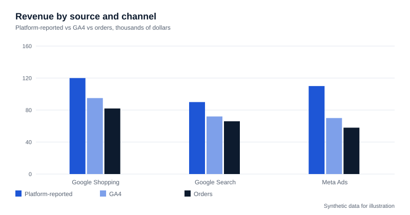

Cross-Channel Marketing Performance Measurement
Reconciling Google Ads, Meta, GA4 and Shopify order data in BigQuery to compare ROAS and MER by channel.
All data on this page is synthetic and illustrative. It demonstrates the method; it is not client data and the figures are not results.

Business context
A DTC store runs Google and Meta ads. Each platform, GA4 and Shopify reports a different revenue figure, so budget conversations start with an argument about whose number is right.
Problem statement
Platform ROAS is inflated by overlapping attribution, GA4 undercounts consented traffic, and nobody has a single revenue figure tied to spend.
Data sources
- Google Ads and Meta Ads daily campaign exports (spend, clicks, platform-reported conversions and value)
- GA4 BigQuery export (events_*)
- Shopify orders (order id, net revenue, discounts, refunds, UTM landing data)
Data architecture
Raw tables land in BigQuery, are standardised in a staging layer (one grain: date x channel x campaign), then joined in a mart that holds spend, platform revenue, GA4 revenue and Shopify revenue side by side.
Technical implementation
Daily Python loads write raw tables. SQL views map UTM and click-id values to a single channel taxonomy. Orders are the source of truth for revenue; GA4 and platforms are compared against it.
SQL methodology
-- channel mart (illustrative)
SELECT d.date, d.channel,
SUM(s.spend) AS spend,
SUM(s.platform_revenue) AS platform_revenue,
SUM(g.ga4_revenue) AS ga4_revenue,
SUM(o.net_revenue) AS order_revenue,
SAFE_DIVIDE(SUM(s.platform_revenue), SUM(s.spend)) AS platform_roas,
SAFE_DIVIDE(SUM(o.net_revenue), SUM(s.spend)) AS blended_roas
FROM dim_date_channel d
LEFT JOIN stg_spend s USING (date, channel)
LEFT JOIN stg_ga4 g USING (date, channel)
LEFT JOIN stg_orders o USING (date, channel)
GROUP BY 1,2;Analytical outputs
- Daily and weekly channel table with spend, three revenue views and variance
- ROAS by platform versus order-based ROAS
- MER (total net revenue / total ad spend) trend
Key findings
- In this synthetic example, platform-reported revenue sums to more than total orders, which is the classic double-counting signature.
- Variance between GA4 and orders is largest on days with consent or checkout changes, so it is flagged for tracking review before it is read as performance.
Business recommendations
- Judge budget moves on MER and order-based ROAS, using platform ROAS only for in-platform optimisation.
- Investigate channels where platform and order revenue diverge by a stable ratio before shifting spend.
Limitations and assumptions
Order-to-channel mapping relies on UTMs and click ids, so untagged orders sit in an unattributed bucket. Revenue reconciliation shows where numbers disagree, not which channel caused the sale.